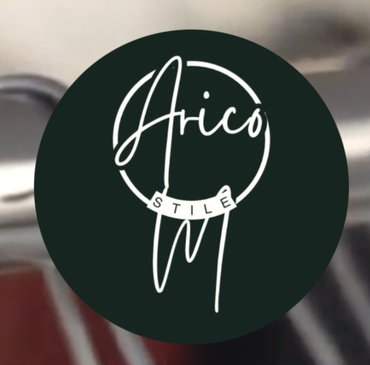

Información del Emprendimiento
- Emprendimiento: Arico
- Productos / Servicios: Vende ropa streetwear, old money
- Ubicación: Calle loa 382
- Numero de contacto: 63355341
Descripción del Emprendimiento
Arico Style es una marca enfocada en la moda urbana contemporánea y el concepto streetwear. Su catálogo está especialmente diseñado para la juventud actual que busca vestir con estilo, comodidad y tendencia. Ofrecen una gran variedad de prendas de vestir, desde poleras, polerones y pantalones de corte moderno hasta accesorios clave para armar un outfit juvenil de calidad. Destacan por la versatilidad de sus prendas y su propuesta innovadora dentro del mercado local.
Muestra Fotográfica
 Muestra del Stand en la Feria
Muestra del Stand en la Feria
 Tarjeta de Presentación
Tarjeta de Presentación
 Qr para mas Información
Qr para mas Información